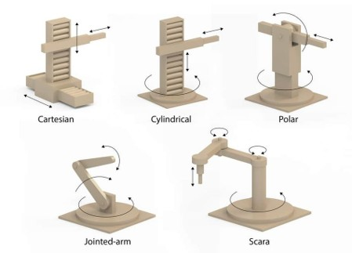
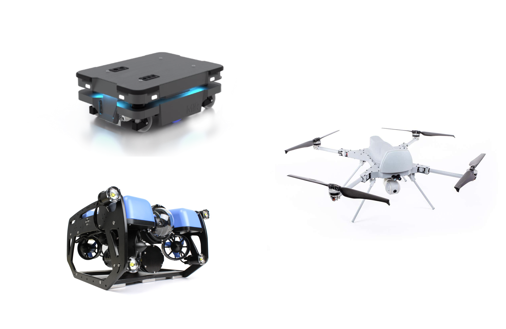
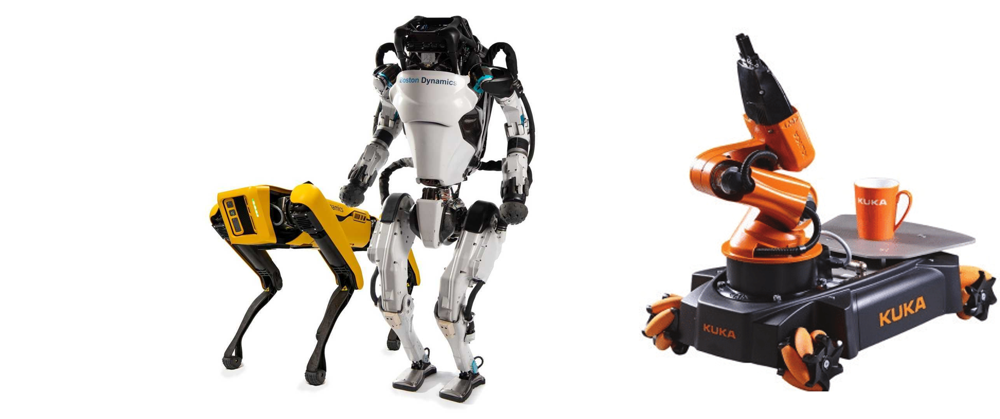

Robot Taxonomies
Robot Definition
“A goal oriented machine that can sense, plan, and act.” — Peter Corke
A robot perceives its surroundings and, guided by a goal, decides on an action to take. That action could be moving the end-effector of a robotic arm to pick up an object, or navigating a mobile robot to a specific location, in other words that physically interacts with the environment.
Is it a robot?
Industrial robot arm (car assembly line)
Robot
An industrial manipulator that:
- Senses: joint encoders, sometimes force/torque sensors or safety scanners
- Plans: trajectories to weld, paint, or assemble according to a production goal
- Acts: moves its joints and end-effector to manipulate parts
Simple electric drill
Not a robot
- Acts: spins when the trigger is pressed
- Missing: no autonomous sensing of the environment, no planning toward a goal
- It simply executes the user’s direct command.
Desktop or laptop computer
Not a robot (by itself)
- Can run planning algorithms, but:
- Does not typically sense the physical environment in a robotics sense.
- Does not act on the physical world (no wheels, no motors, no grippers).
- Better thought of as a possible “brain” for a robot, not the robot itself.
Autonomous vacuum cleaner
Robot
A mobile platform that:
- Senses: bump sensors, cliff sensors, sometimes cameras or LiDAR
- Plans: coverage paths, obstacle avoidance, and how to return to the dock
- Acts: drives its wheels and controls suction to achieve the goal of cleaning
Washing machine
Not a robot
- Runs a preprogrammed script (wash → rinse → spin).
- Limited sensing (e.g., water level), but it does not choose actions based on a high-level goal.
- Considered an automated machine, not a sense–plan–act robot.
Remote-controlled toy car
Not a robot
- The human does all the sensing and planning.
- The car just follows direct commands (forward, turn, stop).
- No autonomous goal-directed behavior.
Smart speaker / voice assistant
Not a robot
- Senses: audio via microphones.
- Plans: decides on responses or cloud actions.
- Acts: mainly outputs sound or data; no movement or manipulation.
- An intelligent interface, not a physical robot.
3D printer or CNC machine
Not a robot
- Acts: moves a toolhead very precisely.
- Senses: minimal (limit switches, basic feedback).
- Executes a fixed program (G-code) rather than planning actions to achieve a high-level goal.
- Depending on the definition used (industrial robotics vs autonomy-focused), CNC/3D printers may be classified as robots; here we treat them as automated machines because they typically do not plan actions toward a high-level goal.
Quadcopter drone
Robot
A flying platform that:
- Senses: IMU (accelerometers, gyroscopes), GPS, barometer, sometimes cameras or LiDAR
- Plans: stabilizes its attitude, follows waypoints, avoids obstacles, or tracks targets
- Acts: controls its motors and propellers to move and hover in 3D space toward a goal (e.g., hold position, follow a path, film a subject)
Types of robots
Robots can be classified in many different ways. Here are some common taxonomies:
-
By application domain: industrial robots, service robots, medical robots, agricultural robots, military robots, space robots, etc.
-
By morphology: manipulators (robot arms), mobile robots (wheeled, legged, aerial, underwater), humanoid robots, swarm robots, etc.
-
By autonomy level: teleoperated robots, semi-autonomous robots, fully autonomous robots.
Robots by morphology
Manipulators
Designed to work in a fixed workspace, these robots stand out for their ability to perform precise, repetitive tasks. Manipulator robots are defined by the joint structure that connects the base to the end-effector. They are often used in industrial settings for tasks such as assembly, welding, and painting. We can find them as RRR, RRP, or other combinations of revolute (R) and prismatic (P) joints.
The main examples are:
- Cartesian Robots (PPP)
- SCARA Robots (RRP)
- Articulated Robots (RRR)
- Spherical Robots (RRP)
- Cylindrical Robots (RPP)
- Delta Robots (Parallel)

Mobile Robots
Designed to move through their environment, either autonomously or under control, across different spaces. They are defined by their locomotion method. Typically used for exploration, transportation, and service tasks.
The main examples are:
- Wheeled robots
- Legged robots
- Tracked robots
- Aerial robots (drones / UAVs)
- Underwater robots (ROVs / AUVs)

Hybrid Robots
Hybrid robots combine mobility and manipulation capabilities in a single system, or integrate multiple types of robotic structures to perform complex tasks. A typical example is a mobile platform equipped with one or more robotic arms, or a humanoid robot that can both walk and grasp objects. These robots are usually designed for highly specific or demanding tasks that require moving through the environment and physically interacting with it.
